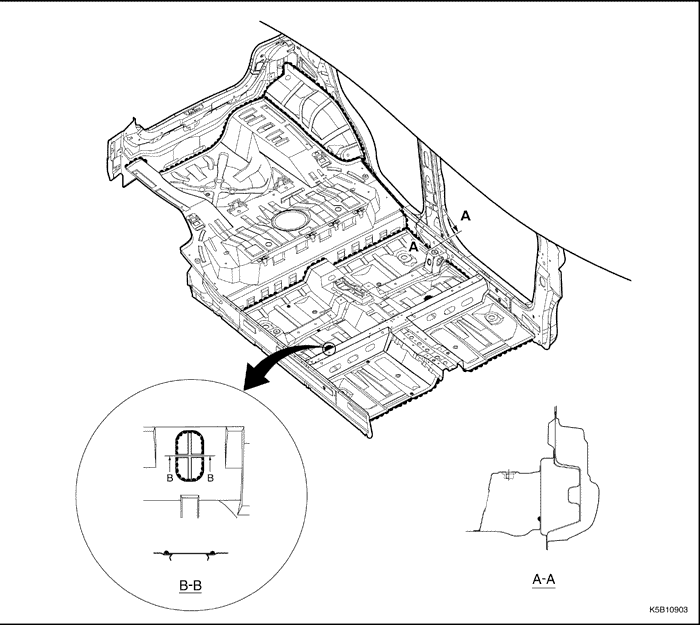
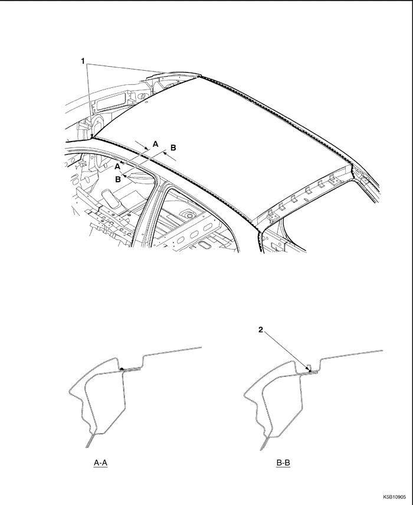
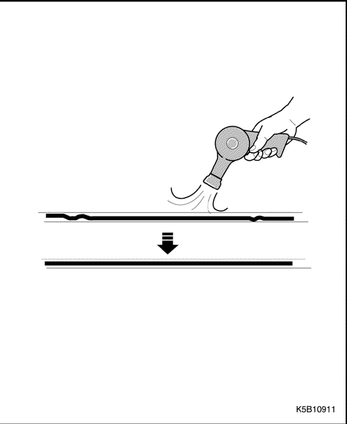
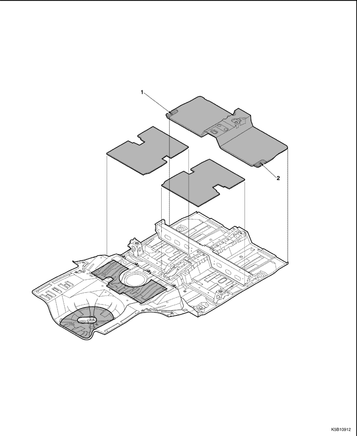

SELLADO, CALAFATEADO E INSONORIZACIÓN
SELLADO Y CALAFATEADO
Nota: NOTA: Selle las siguientes zonas para evitar infiltraciones de aire, agua y corrosión.
| COMPARTIMENTO DEL MOTOR | . |
SALPICADERO
- El sellante debe limpiarse.
- Taponar después de pintar antes de proceso de guarnecido.
PISO Y COMPARTIMENTO DEL MALETERO



LUZ TRASERA Y COMPARTIMENTO DEL MALETERO
TECHO

- El sellante debe limpiarse para encajar el cristal.
- El sellante debe limpiarse para montar las molduras del techo.
TECHO
CAPÓ Y PORTÓN TRASERO
- No debe haber sellador en los orificios de drenaje de pintura.
- El sellador debe limpiarse en los rincones.
- Los orificios de drenaje de pintura deben cerrarse con sellador en 3 sitios.
- No debe haber sellador en los orificios de drenaje de agua en 3 sitios.
| PUERTA DELANTERA Y TRASERA | Límite: mm |
- El sellante debe limpiarse en los rincones.
- No debe haber sellante en el taladro de fijación de la moldura exterior del canal.
- El sellante debe limpiarse detrás de las bisagras de puerta.
- No debe haber sellante en los orificios de drenaje de agua en 3 sitios de la puerta delantera.
- No debe haber sellante en los orificios de drenaje de agua en 2 sitios de la puerta trasera.
- Antialmohadilla - puerta delantera.
- Antialmohadilla - puerta trasera.
- Burlete (ref. solamente)
- Y Parte superior de sección típica de puertas delantera y trasera (zona de canal mostrada por 9).
- Z Parte inferior de sección típica de puertas delantera y trasera.
- Aplicar cera - bisagra de puerta (puerta delantera y trasera).
- Pulverizar para que no haya grasa en esta zona.
* Aplicado sólo en bisagra de puerta trasera.
- Pintar para que no haya sellante en esta zona.
* El dibujo sólo muestra la zona típica, de modo que hay que aplicarla en toda la zona de la bisagra izq./dch. de la puerta delantera y trasera.
INSONORIZACIÓN
DESCRIPCIÓN GENERAL
El material insonorizante está diseñado y utilizado de tal forma que reduzca las vibraciones y el ruido. Asimismo, desempeña su papel en el mantenimiento de la rigidez estructural del panel.
PROCEDIMIENTO DE REPARACIÓN
-
- Desmonte los componentes asociados.
- Asientos, moquetas.
- Guarnecido, otros.
-
- Quite el material insonorizante dañado.
- Levante con cuidado el material insonorizante dañado con una espátula de acero.
-
- Limpieza y secado.
- Antes de aplicar el material insonorizante, limpie y seque bien las zonas donde lo vaya a aplicar.
-
- Presente el nuevo material insonorizante en los paneles donde lo vaya a colocar.
-
Nota: Evite los taladros de fijación de componentes y los taladros de servicio.
-
- Cómo pegar el material insonorizante.
- Caliente la superficie del material insonorizante con un soplete o pistola de calentamiento hasta que se adhiera por sí mismo.
- Apriete y péguelo sobre el panel utilizando una espátula de goma.
-
Nota: Para poder aprovechar al máximo el material insonorizante, su superficie tiene que adherirse a los paneles y estar en perfecto contacto con los mismos.
-
Precaución: Tenga cuidado de no quemar las partes de compuesto aislante cuando lo esté calentando.

- Monte los componentes asociados.
- Móntelos en la misma secuencia en que los desmontó, pero en orden inverso.


- Desprender en conducción a izquierdas.
- Desprender en conducción a derechas.